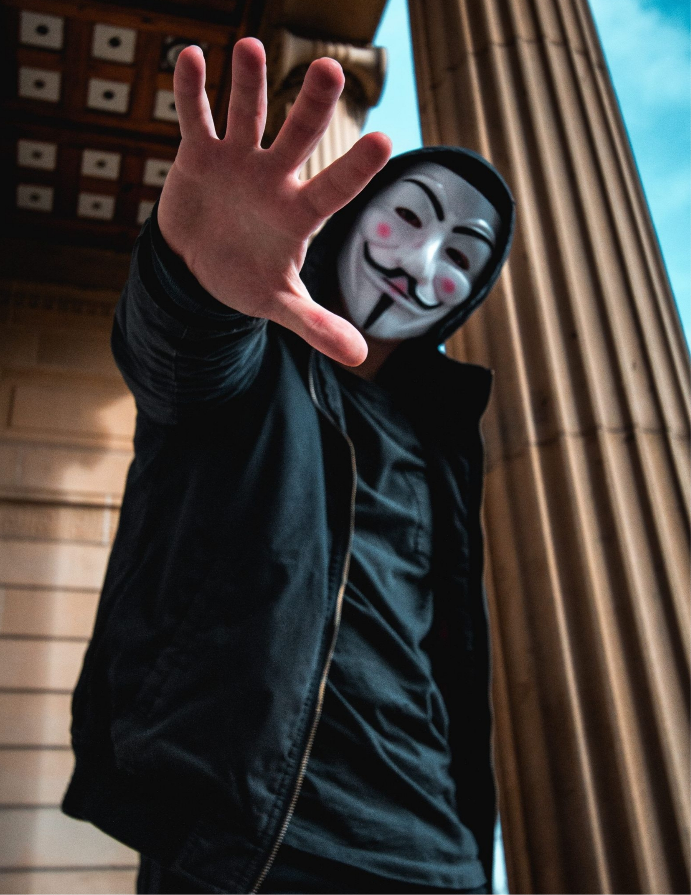

Vad är Ransomwere?
 Ransomewere är ett vapen i ett digitalt krig. Ett vapen som kan skada många människor.I Oldsmar i USA för några år sedan skedde en IT-attack mot stadens vattenverk. Natriumhydroxcinhalterna hade plötsligt börjat stiga i vattennivån. Hackare hade tagit sig in i de system som fjärrstyrde vattenverket. Attacken hade kunnat leda till dödlig utkomst för invårnarna i samhället, som tur var upptäckte en anställd detta i tid. Detta är en av många allvarliga händelser som skett i och med Ransomewere.
Ransomewere är en skadlig kod som krypterar och låser dina filer och dator, oftast i syfte att utpressa och begära en lösensumma. Man kan säga att någon själ din dator genom den skadliga koden. På svenska betyder det utpressningsvirus.
Ransomwere sker på ett proffsigt sätt med mycket psykologi bakom. Steg efter steg är väl uträknat och de använder sig ofta av social manipulation för att lura sitt offer. När ransomewere väl är aktiverat krypteras offrets filer och den ända som har nyckel är hackaren själv. I nästa inlägg "cyberattack mot Nordic Choice" kommer jag berätta om ett exempel på hur det kan gå till.
Olika metoder av Ransomewere
Phising (nätfiske) är en av de vanligaste metoderna och förekommer ofast genom mejl. De vill manipulera dig till
att klicka på en länk, ladda ner en fil eller lämna ut dina personliga uppgifter.
Spear Phising (riktade spamattacker) är en metod som är inriktad mot dig som individ eller grupp.
De tar först reda på information om dig för att övertyga dig om att det är seriöst.
Catfishing en metod där de skapar fejkade profiler. De går till väga på samma sätt som Phising, men
där de låssas vara någon annan. Det kan vara en vän till dig som ber om pengar bara det att det inte är din vän,
utan en identisk profil.
Personerna bakom ransomewere
Det finns såklart personer bakom datorn hemma som sitter och hackar människor, men det finns också stora rörelser världen över.
Dessa stora rörelser är i praktiken som vilket företag som helst, de har rekrytering och säkerligen måndagsmöte med fika.
Hackergruppen Anonymous har gjort sig kända för sina cyberattacker mot regeringar, myndigheter, företag och Scientologikyrkan.
De var tidigare anhängare av den globala Occupy-rörelsen och Arabiska våren, de bådas rörelser grundade sig i
den ekonomiska och sociala ojämnlikhet där man gjorde uppror. Anonymous är nätaktivister som vill skapa förändring
genom ransomewere. Jag skulle inte vilja påstå att de är blyga, då de vid flertalet tillfällen spelat in filmer och
lagt ut med förvrängd röst där de talar om vad de vill. Anonymous Iran som hade över 22 000 anhängare världen över
skapade regimkritiska hemsidor där Iranier kunde dela för världen om vad som hände innanför landets gränser.
Deras mål är ofta politiska.
Även om Anonymous är de som flest känner till så finns det fler grupper som hackat rätt rejält. Under de senaste tre åren har hackergrupperna
grupperna Conti, LockBit, Pysa, REvil och Maze/Egregor varit ansvariga för mer än hälften av alla ransomewere-attacker.
En av de värsta hackergrupperna är REvil. De har attackerat bland annat Donald Trump och Apple.
Dem skapar, underhåller och säljer vidare ransomewere till andra cyberkriminella.
Då är inte lika kontaktsökande som Anonymus, så det är svårt att sätta fingret på hur många dem är men under 2022 lyckades man gripa några av dem
vilket resulterat i att dem inte är lika aktiva idag. Vi kan hoppas på att dem inte ligger lågt i väntan på sina kollegors fängelsestraff.
En hackergrupp som riktar in sig på mindre företag är Lockbit och dem är väldigt aktiva idag. Inom ransomewere-världen
anses gruppen vara "Robin Hood" då de frjämjar den "etiska" användningen av Ransomewere och säger att de inte kommer
rikta in sig på hälso- eller socialtjänstorganisitioner. Deras affärsmodell går ut på att via sin webbportal på de mörka nätverket
The Onion Router, rekrytera nya kollegor och släppa data från offer som inte uppfyller deras krav. Just deras försäkran
till sina offer om att de kommer ta bort informationen så fort en lösensumma betalats är något de håller hårt på.
Spåren leder till Ryssland och det är därifrån man tror anhängarna härstammar ifrån.
Hur skyddar man sig?
Man kan inte göra så mycket mer än det grundläggande som att skydda sina lösenord, öka medvetenheten, använda flerfaktorsautentisering samt backa upp dina filer regelbundet. Om du vill vara lite extra säker kan man använda sig av VPN, vilket betyder att istället för att du kopplar upp dig mot internet så går din internettrafik genom en VPN-server. VPN krypterar din data och vissa VPN-leverantörer erbjuder Threat Protaction som scannar dina nedladdade filer, identiferar hot och blockerar dem.